TutorialTest
Contents
Matlab神经网络43个案例分析
% LIBSVM-FarutoUltimate工具箱及GUI版本介绍与使用 % by 李洋(faruto) % http://www.matlabsky.com % Email:faruto@163.com % http://weibo.com/faruto % http://blog.sina.com.cn/faruto % 2013.01.01
若转载请注明：
faruto and liyang , LIBSVM-farutoUltimateVersion a toolbox with implements for support vector machines based on libsvm, 2011. Software available at http://www.matlabsky.com
Chih-Chung Chang and Chih-Jen Lin, LIBSVM : a library for support vector machines, 2001. Software available at http://www.csie.ntu.edu.tw/~cjlin/libsvm
tic; close all; clear; clc; format compact;
test for scaleForSVM
train_data = [1 12;3 4;7 8] test_data = [9 10;6 2] [train_scale,test_scale,ps] = scaleForSVM(train_data,test_data,0,1)
train_data =
1 12
3 4
7 8
test_data =
9 10
6 2
train_scale =
0 1.0000
0.2500 0.2000
0.7500 0.6000
test_scale =
1.0000 0.8000
0.6250 0
ps =
name: 'mapminmax'
xrows: 2
xmax: [2x1 double]
xmin: [2x1 double]
xrange: [2x1 double]
yrows: 2
ymax: 1
ymin: 0
yrange: 1
no_change: 0
test for pcaForSVM
load wine_test whos train_data [train_scale,test_scale,ps] = scaleForSVM(train_data,test_data,0,1); [train_pca,test_pca] = pcaForSVM(train_scale,test_scale,95); whos train_pca
Name Size Bytes Class Attributes train_data 89x13 9256 double Name Size Bytes Class Attributes train_pca 89x10 7120 double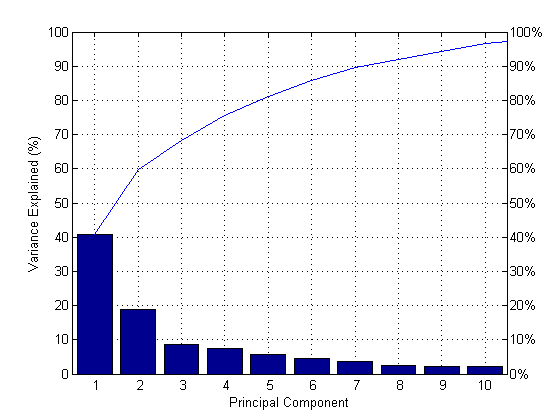
test for SVMcgForClass
load wine_test
[train_scale,test_scale,ps] = scaleForSVM(train_data,test_data,0,1);
[bestacc,bestc,bestg]=SVMcgForClass(train_data_labels,train_scale,-10,10,-10,10,5,0.5,0.5,4.5)
bestacc =
98.8764
bestc =
2
bestg =
2.8284
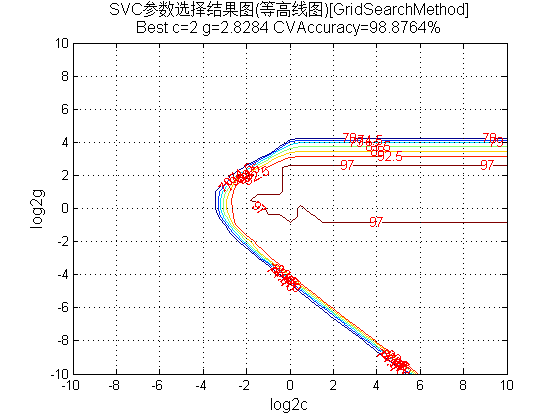 
test for psoSVMcgForClass
load wine_test
[train_scale,test_scale,ps] = scaleForSVM(train_data,test_data,0,1);
pso_option.c1 = 1.5;
pso_option.c2 = 1.7;
pso_option.maxgen = 100;
pso_option.sizepop = 20;
pso_option.k = 0.6;
pso_option.wV = 1;
pso_option.wP = 1;
pso_option.v = 5;
pso_option.popcmax = 100;
pso_option.popcmin = 0.1;
pso_option.popgmax = 100;
pso_option.popgmin = 0.1;
[bestacc,bestc,bestg]=psoSVMcgForClass(train_data_labels,train_scale,pso_option)
bestacc =
98.8764
bestc =
5.5965
bestg =
4.4675
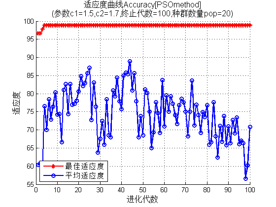 test for gaSVMcgForClass
load wine_test
[train_scale,test_scale,ps] = scaleForSVM(train_data,test_data,0,1);
ga_option.maxgen = 100;
ga_option.sizepop = 20;
ga_option.cbound = [0,100];
ga_option.gbound = [0,100];
ga_option.v = 10;
ga_option.ggap = 0.9;
[bestacc,bestc,bestg]=gaSVMcgForClass(train_data_labels,train_scale,ga_option)
bestacc =
98.8764
bestc =
7.9109
bestg =
3.7207
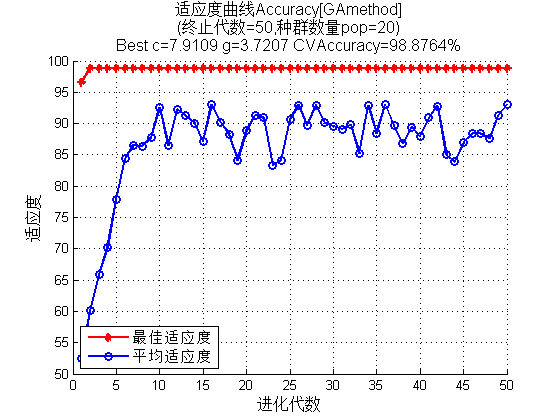 test for svmplot
load fisheriris; data = [meas(:,1), meas(:,2)]; groups = ismember(species,'setosa'); [train, test] = crossvalind('holdOut',groups); dataset = data(train,:); labels = double(groups(train)); model = svmtrain(labels,dataset,'-c 2 -g 0.1'); svmplot(labels,dataset,model);
Mean squared error = 3.15195 (regression) Squared correlation coefficient = -1.#IND (regression)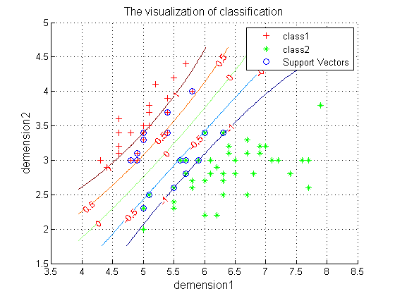
test for SVC.m
load wine_test;
train_label = train_data_labels;
train_data = train_data;
test_label = test_data_labels;
test_data = test_data;
Method_option.plotOriginal = 0;
Method_option.scale = 1;
Method_option.plotScale = 0;
Method_option.pca = 1;
Method_option.type = 1;
[predict_label,accuracy] = SVC(train_label,train_data,test_label,test_data,Method_option);
bestCVaccuracy =
97.7528
bestc =
1.7411
bestg =
5.2780
Accuracy = 100% (89/89) (classification)
Accuracy = 97.7528% (87/89) (classification)
accuracy =
100.0000 97.7528
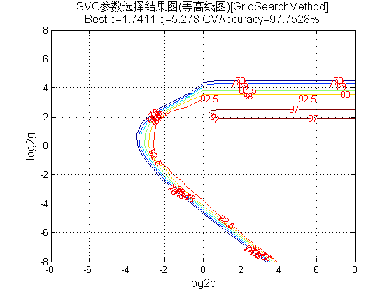 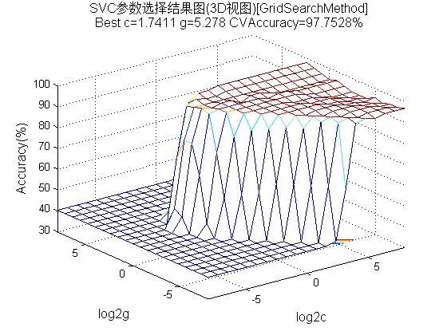 test for SVR.m
load x123;
train_y = x1(1:17);
train_x = [1:17]';
test_y = x1(18:end,:);
test_x = [18:20]';
Method_option.plotOriginal = 0;
Method_option.xscale = 1;
Method_option.yscale = 1;
Method_option.plotScale = 0;
Method_option.pca = 0;
Method_option.type = 5;
[predict_Y,mse,r] = SVR(train_y,train_x,test_y,test_x,Method_option);
bestCVmse =
0.0326
bestc =
4.4803
bestg =
32.9112
bestp =
0.0216
Mean squared error = 0.000400906 (regression)
Squared correlation coefficient = 0.996549 (regression)
Mean squared error = 0.00171783 (regression)
Squared correlation coefficient = 0.994947 (regression)
mse =
0.0004 0.0017
r =
0.9965 0.9949
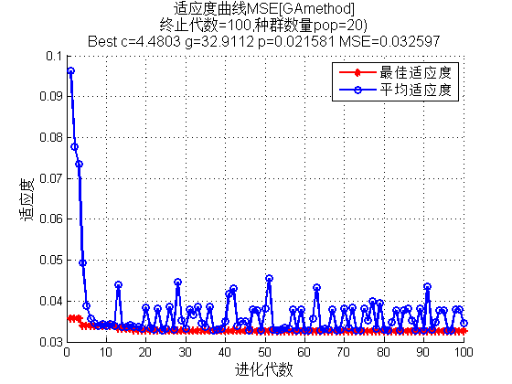 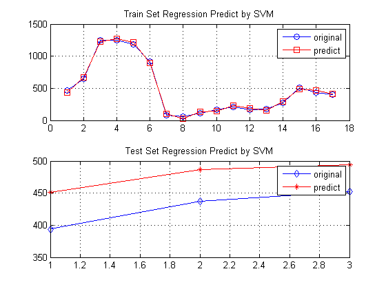 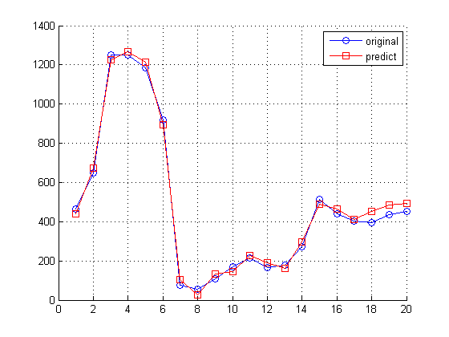 test for VF.m
load wine_test [train_scale,test_scale,ps] = scaleForSVM(train_data,test_data,0,1); model = svmtrain(train_data_labels,train_scale,'-c 2 -g 0.1'); [pre,acc] = svmpredict(train_data_labels,train_scale,model); [score,str] = VF(train_data_labels,pre,1) [score,str] = VF(train_data_labels,pre,2) [score,str] = VF(train_data_labels,pre,3) [score,str] = VF(train_data_labels,pre,4) [score,str] = VF(train_data_labels,pre,5)
Accuracy = 96.6292% (86/89) (classification)
score =
96.6292
str =
Accuracy = 96.6292% (86/89) [Accuracy = #true / #total]
score =
96.7742
str =
Precision = 96.7742% (30/31) [Precision = true_positive / (true_positive + false_positive)]
score =
100
str =
Recall = 100% (30/30) [Recall = true_positive / (true_positive + false_negative)]
score =
98.3607
str =
F-score = 98.3607% [F-score = 2 * Precision * Recall / (Precision + Recall)]
score =
50
str =
BAC = 50% [BAC (Ballanced ACcuracy) = (Sensitivity + Specificity) / 2]
test for ClassResult.m
load heart_scale.mat;
data = heart_scale_inst;
label = heart_scale_label;
model = svmtrain(label,data);
type = 1;
CR = ClassResult(label, data, model, type)
Accuracy = 86.6667% (234/270) (classification)
===some info of the data set===
#class is 2
类别标签为 1 -1
支持向量数目 132,所占训练集样本数目比例 48.8889% （132/270）
===各种分类准确率===
整体分类准确率 = 86.6667% (234/270)
第 1 类分类准确率 = 80.8333% (97/120)
第 -1 类分类准确率 = 91.3333% (137/150)
CR =
accuracy: [0.8667 0.8083 0.9133]
SVlocation: [132x1 double]
b: -0.4245
w: [132x1 double]
alpha: [132x1 double]
test for plotSVMroc
load wine_test [train_data,test_data] = scaleForSVM(train_data,test_data,0,1); model = svmtrain(train_data_labels,train_data,'-c 0.01 -g 0.01 -b 1'); [pre,acc,dec] = svmpredict(train_data_labels,train_data,model,'-b 1'); plotSVMroc(train_data_labels,dec,3)
Accuracy = 95.5056% (85/89) (classification)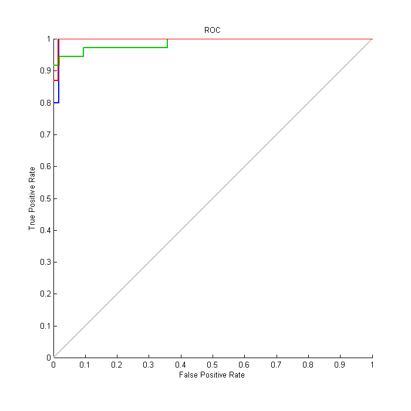 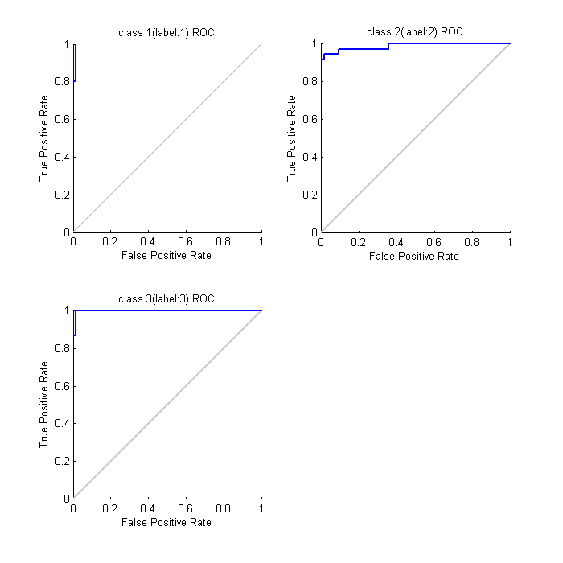
toc;
Elapsed time is 41.691651 seconds.